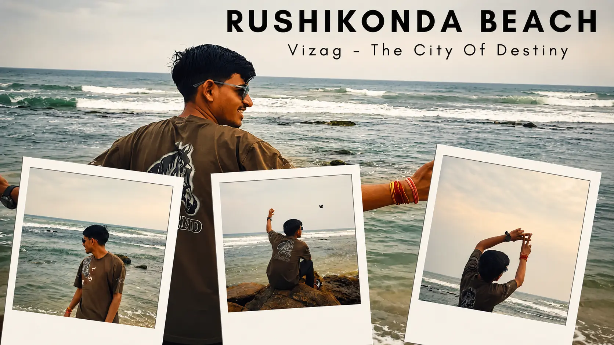
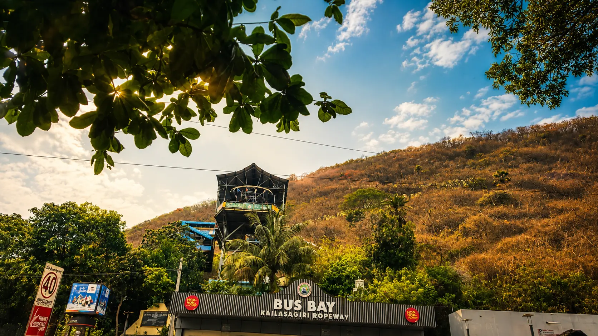
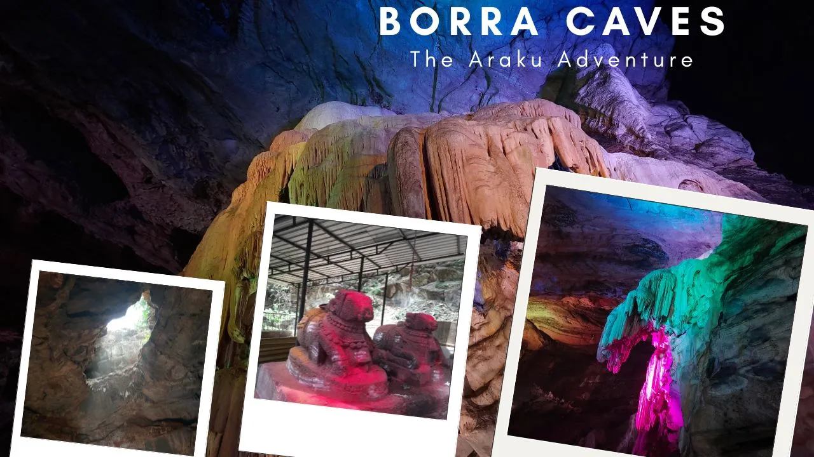
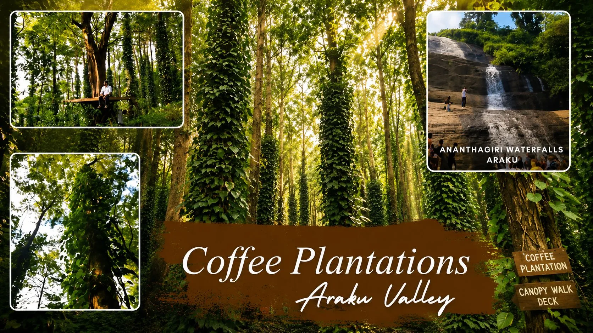

The Beginning
Every trip starts with a destination. But this one started with a wish.
When our Vizag trip was finally planned, I had only one small manifestation in my mind:
"Kaash Vizag pahuchte hi barish ho jaye..."
I don't know why, but I really wanted to experience the ocean with rain. And sometimes life surprises you in the most unexpected ways.
As soon as we reached Visakhapatnam and headed towards the famous RK Beach in the evening, dark clouds slowly started gathering above the sea. The waves were dancing. The wind was getting stronger.
And then... It started raining.
Not the kind of rain that ruins plans. The kind of rain that creates memories.
At that moment, standing beside the ocean, watching raindrops disappear into the sea, I felt like my manifestation had actually worked. My excitement was somewhere beyond the clouds. It felt magical.
For a few moments, I wasn't thinking about work, responsibilities, or anything else. I was simply present. Enjoying the moment. Enjoying life.

Exploring Vizag After Dark
After returning from RK Beach, our adventure was far from over. We headed towards the local markets near the city and explored the evening life of Vizag.
The streets were alive. Local vendors. Small food stalls. People enjoying their evenings. The aroma of local food everywhere.
We tried a few local snacks, explored the market, and discovered a special tea stall that instantly became one of our favorite spots during the trip. That tea wasn't just tea. It became part of the memory.
Day 2 — Sun, Sand & Endless Walking
The second day started with excitement. And what better way to begin a coastal journey than visiting a beach?
Our destination was Rushikonda Beach. The golden sand, blue water, and fresh sea breeze made the place feel alive. We spent hours enjoying the waves. Laughing. Swimming. Making memories.
And honestly, at that moment, life felt simple. No deadlines. No stress. Just happiness.

The Kailasagiri Challenge
After Rushikonda, we headed towards Kailasagiri. And this is where the adventure level increased dramatically.
Instead of taking the easy route, we decided to walk and climb through the steps. At first it felt exciting. Then the sun reminded us that summer was still very much alive.
The wet clothes from the beach were already making our backpacks heavier. The heat was unbearable. Every step felt heavier than the previous one.
Yet somehow we kept moving. Sweating. Laughing. Complaining. And still enjoying every moment.
Because sometimes the best travel memories come from the uncomfortable parts of the journey.
The view from the top made every step worth it. Standing there, overlooking the endless coastline of Vizag, I realized that some views must be earned.

Walking Towards The Unknown
After Kailasagiri, we took a bus and returned towards RK Beach. From there, we simply started walking. No destination. No plan. Just curiosity.
Eventually, we found ourselves moving towards the port area. And then we witnessed something completely unexpected: Massive fish.
Bigger than anything we had ever seen before.
Now, being a completely vegetarian family, we obviously had no interest in eating them. But seeing them up close was a unique experience in itself.
Travel teaches you that not every experience has to match your lifestyle. Sometimes it's simply about observing a different world. And that's exactly what we did.

Day 3 — The Rain Returns
The next morning began with a familiar sound. Rain.
At around 4 AM, the weather once again decided to surprise us. The same thing that happened on Day 1. The same manifestation energy. The same excitement.
Even before we boarded our train for Araku Valley, the rain had already arrived. At that point, it almost felt like Vizag had personally decided to welcome us with rain every day.
The Araku Adventure
If Vizag was beautiful... Araku Valley was breathtaking.
The train journey itself felt like an experience. Tunnels. Mountains. Green landscapes. Clouds floating above the hills. Every few minutes, another postcard-worthy view appeared outside the window.
And then came the famous Borra Caves.

Walking through those ancient caves felt like stepping into another world. The natural rock formations, mysterious atmosphere, and massive cave chambers were unlike anything I had seen before.
It was one of those places where photographs can never fully capture the feeling of actually being there.
Food, Coffee & Waterfalls
After Borra Caves, we explored local food options. And yes... Before anyone asks... We are pure vegetarians.
So the famous Bamboo Chicken was never going to happen. We happily skipped that chapter. Instead, we enjoyed local vegetarian options and continued our journey.

The drive through Araku was simply incredible. Every turn revealed another beautiful landscape. Every road felt like a scene from a travel film.
The Return Journey From Hell
And then came the return trip. The part nobody warns you about. The endless mountain curves. The sharp turns. The winding roads. The non-stop bends.
By the time we reached the bus, our bodies had officially surrendered. Head spinning. Stomach confused. Legs exhausted. Brain questioning every life decision.
The road was beautiful. Our condition wasn't. Yet somehow, even that became part of the adventure.
Because every great trip deserves at least one story of survival. And Araku gave us exactly that.
The Final Night In Vizag
We returned to Vizag around midnight. Tired. Exhausted. Sleepy. Hungry.
We had dinner close to 12 AM and immediately crashed into our beds. But even then, one thing remained constant throughout the trip.
Every morning we had breakfast from the small stall outside our hotel. And right beside it was our favorite tea vendor. That special tea became a daily ritual.
Some places are remembered because of monuments. Others because of simple moments. For me, that tea stall became one of those moments.
The Secret Of The Last Day
The final day brought an experience that I cannot fully reveal here. Some memories are meant to stay personal. Some stories are meant to remain unfinished.
And honestly... That mystery is what makes them special.
All I can say is: It was completely unexpected. And definitely one of the most memorable parts of the trip.
Because Dil Toh Bachcha Hai Ji
Before boarding our train back home, something unexpected happened. About an hour before departure, I noticed two kids playing cricket in a nearby garden.
And without thinking too much... I joined them.
For a few minutes, I wasn't a traveller. I wasn't a content creator. I wasn't planning the next destination. I was simply a kid playing cricket.
And honestly? Those few moments were just as memorable as the beaches and mountains.
Because no matter how old we grow,
Dil toh bachcha hai ji.
The Journey Home
On 30th May, it was finally time to return home. And that's when the strange feeling arrived.
The feeling every traveller knows. The sadness of leaving. The happiness of having experienced something beautiful. The desire to stay longer. And the excitement of planning the next adventure.
While travelling back, every memory started replaying in my mind:
Everything. It felt like the entire trip was playing a repeat telecast inside my head.
Even after reaching home, those memories refused to leave. And maybe that's the true purpose of travel.
Not to escape life.
But to collect moments that stay with us long after the journey ends.
Final Thoughts
Some journeys give you photographs.
Some journeys give you stories.
And some journeys give you memories that replay in your heart forever.
Visakhapatnam wasn't just a destination. It became a feeling. A chapter of rain, beaches, mountains, adventure, friendship, and unforgettable moments.
And as I closed this chapter, I knew one thing for sure:
The ocean answered my manifestation.
And I can't wait to see where the next journey takes me.
🌊 Until the next adventure...
— Aman K
Wander With Aman ✈️🌍
Share Your Thoughts